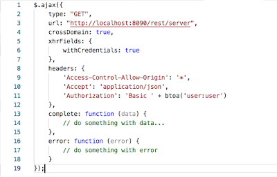

Enabling CORS in your jBPM Business Application
Currently when you generate your jBPM Business Application (online via start.jbpm.org, command-line via the jba-cli package, or in Visual Studio code via the jBPM extension) your app will have CORS (Cross-origin resource sharing) disabled by default.
With CORS disabled, if you have a consumer app (e.g. React frontend) which does not live on the same domain as your business app, it will not be able to query its REST api.
CORS will be enabled by default with the next jBPM community release (7.18.0.Final), see Jira JBPM-8176, but if you would like to enable this on you own now, it is very easy to do:
In your generated business app service module edit the DefaultWebSecurityConfig.java file and replace it with the one in this Gist. That’s it :)
With this change in place you will now be able to query your business apps REST api from any domain, for example if you are using jQuery.ajax and want to get your server information (/rest/server endpoint) you could do for example:
 |
| Sample ajax request to /rest/server |

{kind=link}